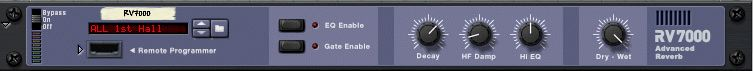
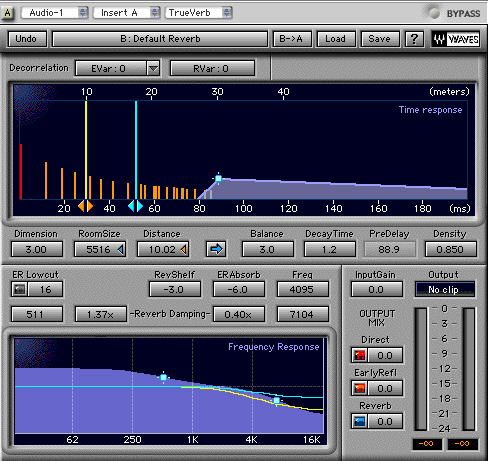
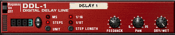
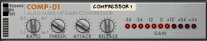

As part of a live performance or in mixing, audio may be altered in both subtle and significant ways. Using Digital Signal Processing (DSP) tools, we may add acoustical effects such as reverb, echo, and chorus. We can change the tone color of a sound, or perform very significant changes in pitch or audio quality of a given sound.
In the physical world, there are many varieties of effects processors. Today, all of these are emulated in the virtual domain by software-based processors. These are often included in software applications in the form of add-ons called plug-ins. Plug-ins are small files that add functionality to a host application.
There are several standards for software DSP plug-ins, including the cross-platform VST (Virtual Studio Technology) format developed by Steinberg and TDM (Time-Domain Multiplexing) developed by Digidesign.
For this course, we will be using the processors in Reason. These are emulations of phsical devices that are "built into the rack."
In music production we'll often want to change the sound of a recorded performance either to make up for deficiencies in the recording process, or to creatively enhance our tracks in some way.
In the physical world, effects devices come in all shapes and sizes, varying greatly in quality and price. The examples we've seen so far in this lesson have all been high-end professional devices, but there are many cost-effective units on the market today that are geared toward desktop production. It's also important to remember that every processor has it's own unique sound, and that some of the sounds you may have heard on hit records have come from unorthodox techniques such as processing drums sounds through cheap guitar effects pedals.
Let's take a look at how this plays out in the virtual world.
The effects processors we'll use in Reason are modeled after similar hardware devices from the physical world, with some occasional twists. In Reason's virtual studio environment, we'll connect them in much the same way as we would if we were wiring a physical studio. This will make it easy to apply what we've learned in this course to other similar devices.
Much like synthesizers though, effects processors are subject to user interface issues. The best devices not only sound great, but are easy to use. In some effects, this is not so much of an issue, simply because there are can be far less parameters to be edited than on a synthesizer.
RV-7000 is the reverb effect in Reason. On the front panel we see a few basic controls, similar to what we might see on a low-cost hardware device.

Reason's REV-7000
Another approach to effects processing in the virtual world is the use of software plug-ins, as you'll see when when using Digital Performer, Logic or ProTools. Plug-ins are software products that add functionality to a host application. There are many different formats of plug-ins on both the Mac and PC, and the incompatibility of these can sometimes make purchasing plug-ins confusing.
TrueVerb, as we see below, is a reverb plug-in that is available for all plug-in formats. Like software synthesizers, effects plug-ins are designed to take advantage of a computer's user interface and can display much more information about how the various parameters will affect the sound. Compare TrueVerb to REV-7000 above and you'll clearly see that although the parameters seen in REV-7000 are in both, TrueVerb goes much further, providing more control and a visual display.

Trueverb from Waves
Let's take a look at some common types of effects found in Reason adapted that we'll use in desktop production.
Reason Adapted Processors |
|
Delay |
 |
Compressor |
 |
Reverb |
|